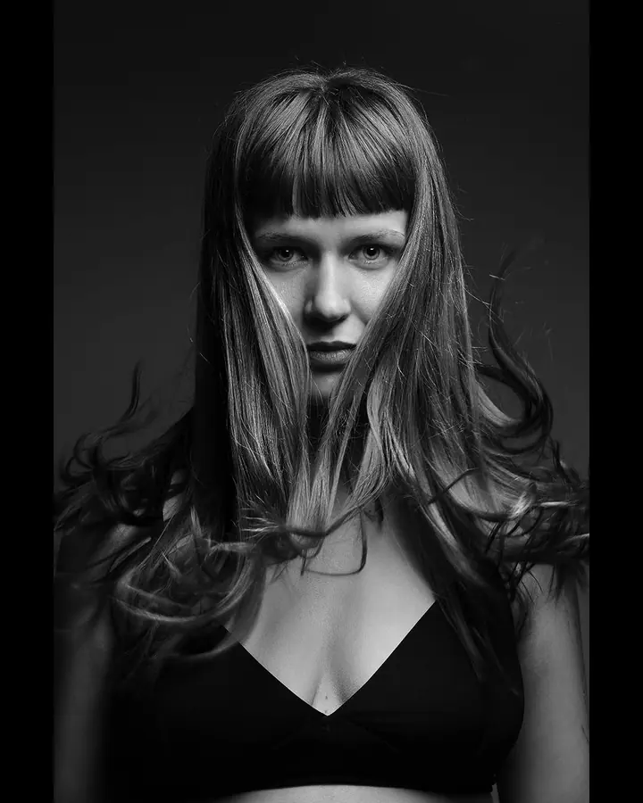
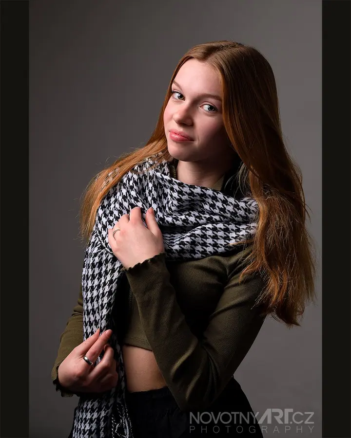

Portrétní fotografování
Portréty pro propagaci, životopis, volební nebo business prezentaci. Fotím v ateliéru, venku i přímo ve vaší firmě. Průkazové a vízové fotky máte na počkání.

Fotograf a video tvůrce
Jmenuji se Jiří Novotný a jsem fotograf a video tvůrce z Rychnova nad Kněžnou. Ve svém ateliéru fotím portréty a produkty, venku pak svatby, akce, architekturu a záběry z dronu. Pod značkou DronFotoVideo dostanete fotky, video i tisk na jednom místě.
Zeptat se na termín
Portréty pro propagaci, životopis, volební nebo business prezentaci. Fotím v ateliéru, venku i přímo ve vaší firmě. Průkazové a vízové fotky máte na počkání.
Zdokumentuji celý váš svatební den od příprav přes obřad a společné focení až po zábavu.
Můj ateliér najdete v Rychnově nad Kněžnou, v 6. patře paneláku Hokejka na Sokolovské ulici. Je bezbariérový a zaparkujete hned vedle. Fotím tu portréty, produkty i průkazové fotky na počkání. Když se potřebujeme potkat jinde, přijedu za vámi do firmy nebo do přírody.
Kromě fotografie se věnuji i videu. Natáčím reklamní a realitní videa, volební spoty, krátká videa pro sociální sítě a podcasty od přípravy po zveřejnění na YouTube. Létám s dronem a dělám letecké záběry pro reklamu, reality i dokumentaci staveb.
Baví mě i práce, která zůstává v pozadí. Fotím obrazy a tisknu jejich limitované kopie pro umělce a galerie, skenuji staré fotografie, diapozitivy a filmy a retušuji a koloruji staré snímky. Kalibruji také monitory, aby barvy, které vidíte na obrazovce, odpovídaly skutečnosti.
Zavolejte mi nebo napište e-mail a řekněte mi, co potřebujete. Projdeme spolu rozsah práce a u videa vám připravím předběžnou kalkulaci.
Domluvíme termín a místo: ateliér v Rychnově, exteriér nebo vaši firmu. Po dohodě fotím i mimo otevírací dobu.
V klidu fotíme nebo natáčíme a průběžně se ladí světlo i detaily, aby výsledek odpovídal tomu, k čemu ho budete používat.
Vyberu nejlepší záběry, upravím je nebo sestříhám video. Fotky vám můžu rovnou vytisknout, i na plátno.
Na Sokolovské 1343 v Rychnově nad Kněžnou (panelák Hokejka), první vchod od silnice, 6. patro, bezbariérový přístup. Zaparkujete zdarma u světelné křižovatky nebo u Kauflandu.
Ateliér je otevřený v pondělí až pátek od 9 do 17 hodin. Po dohodě se můžete objednat i mimo otevírací dobu.
Průkazové fotografie 35 × 45 mm stojí 140 Kč a vytisknu je na počkání. Dělám i vízové fotografie 50 × 50 mm.
Hotově nebo okamžitou platbou přes QR kód v bankovní aplikaci, fotky si pak hned odnesete. Fakturu vystavuji u částek nad 8 000 Kč nebo na požádání, jsem plátce DPH.